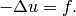
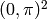
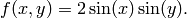
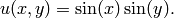

Smooth-iso (Elliptic)¶
Git reference: Benchmark smooth-iso.
We show that it is a very bad idea to approximate smooth solutions using low-order elements.
Equation solved: Poisson equation
(1)
Domain of interest: Square .
Right-hand side:
(2)
Boundary conditions: Zero Dirichlet.
Exact solution:
(3)
Code for the exact solution and the weak forms:
// Exact solution.
static double fn(double x, double y)
{
return sin(x)*sin(y);
}
static double fndd(double x, double y, double& dx, double& dy)
{
dx = cos(x)*sin(y);
dy = sin(x)*cos(y);
return fn(x, y);
}
// Boundary condition types.
BCType bc_types(int marker)
{
return BC_ESSENTIAL;
}
// Essential (Dirichlet) boundary conditions.
scalar essential_bc_values(int ess_bdy_marker, double x, double y)
{
return 0;
}
// Weak forms.
template<typename Real, typename Scalar>
Scalar bilinear_form(int n, double *wt, Func<Scalar> *u_ext[], Func<Real> *u, Func<Real> *v, Geom<Real> *e, ExtData<Scalar> *ext)
{
return int_grad_u_grad_v<Real, Scalar>(n, wt, u, v);
}
template<typename Real>
Real rhs(Real x, Real y)
{
return 2*sin(x)*sin(y);
}
template<typename Real, typename Scalar>
Scalar linear_form(int n, double *wt, Func<Scalar> *u_ext[], Func<Real> *v, Geom<Real> *e, ExtData<Scalar> *ext)
{
return int_F_v<Real, Scalar>(n, wt, rhs, v, e);
}
Solution:

Below we show meshes obtained using various types of adaptivity. Note the tremendous differences in their performance. The meshes do not correspond to the same level of accuracy since the low-order methods could not achieve the same error as hp-FEM. Therefore, compare not only the number of DOF but also the error level. Convergence graphs for all cases are shown at the end of this section.
Final mesh (h-FEM, p=1): 27469 DOF, error 0.39173795799476 %
Final mesh (h-FEM, p=2): 39185 DOF, error 0.0022127484879974 %

Final mesh (hp-FEM): 49 DOF, error 4.2775412425017e-05 %

DOF convergence graphs:

CPU time convergence graphs: